전자기기기능사 (2016-07-10 기출문제)
1과목: 전기전자공학
1. 오실로스코프에 연결하여 파형을 측정하였을 때 측정 파형이 다음 그림과 같았다. 최고점간(peak to peak) 전압(VP-P)은 몇 V 인가? (단, 프로브는 10:1을 사용하였다.)
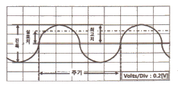
- 0.2
- 0.4
- 4
- 8
(정답률: 72%)

2. LC 발진 회로에서 귀환 회로에 3소자의 연결 형태에 따라 발진 회로를 구분할 수 있다. 다음 발진 회로의 발진 조건은? (단, 항상 Z1, Z2, Z3 소자는 부호가 같다고 가정한다.)
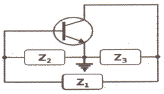
- Z1 : 용량성, Z2 : 용량성, Z3: 유도성
- Z1 : 용량성, Z2 : 유도성, Z3: 용량성
- Z1 : 유도성, Z2 : 용량성, Z3: 용량성
- Z1 : 유도성, Z2 : 용량성, Z3: 유도성
(정답률: 83%)
3. 저항 5Ω, 용량성 리액턴스 4Ω이 병렬로 접속된 회로의 임피던스는 약 몇 Ω 인가?
- 0.32
- 0.67
- 1.49
- 3.12
(정답률: 59%)
4. 동조회로에서 최대 이득을 얻기 위한 조건으로 옳은 것은? (단, 코일의 결합계수 k, 선택도 Q 이다.)
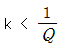
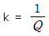
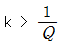
- k = Q
(정답률: 73%)
5. 정현파(사인파) 발진 회로가 아닌 것은?
- RC 발진 회로
- LC 발진 회로
- 수정 발진 회로
- 블로킹 발진 회로
(정답률: 70%)
6. 7 세그먼트 표시장치(seven-segment display)의 용도로 적합한 것은?
- 10진수 표시
- 신호 전송
- 레벨 이동
- 잡음 방지
(정답률: 80%)
7. 정류기의 평활회로는 어떤 종류의 여파기에 속하는가?
- 대역 통과 여파기
- 고역 통과 여파기
- 저역 통과 여파기
- 대역 소거 여파기
(정답률: 73%)
8. 하나의 집적 회로(integrated circuits, IC) 속에 들어있는 집적 소자의 개수가 10개 이하 범위에 속하는 집적 회로는?
- VLSI
- SSI
- LSI
- MSI
(정답률: 79%)
9. 주파수 안정도가 가장 높은 발진 회로는?
- 수정 발진 회로
- 클랩 발진 회로
- 하틀리 발진 회로
- 콜피츠 발진 회로
(정답률: 79%)
10. 위상 천이(이상형) 발진 회로의 발진주파수는? (단, R1 = R2 = R3 = R 이고, C1 = C2 = C3 = C 이다.)
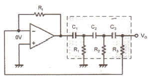
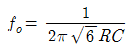
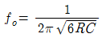
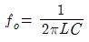
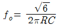
(정답률: 72%)
11. JK 플립플롭을 이용한 동기식 카운터 회로에서 어떻게 동작하는가?
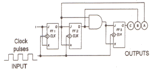
- 10진 증가(down) 카운터
- 3비트 Mod-8 카운터
- 16진 감소(down) 카운터
- 10비트 Mod-8 카운터
(정답률: 71%)
12. 다음 회로의 입력(Vi)에 구형파를 가하면 출력 파형(Ve)은?
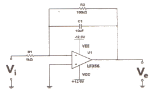
- 정현파
- 구형파
- 삼각파
- 사다리꼴파
(정답률: 70%)
13. 다음 연산 증폭기의 전압 증폭도 Av는?
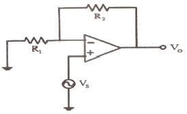
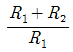
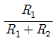
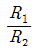
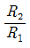
(정답률: 60%)
14. 다음 회로에 대한 설명으로 틀린 것은?
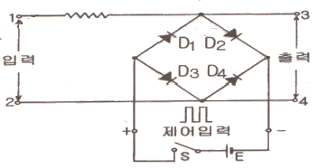
- 회로는 브리지형 게이트 회로이다.
- 스위치 S에 무관하게 입력한 전압이 그대로 출력 측의 전압으로 나타난다.
- 스위치 S를 닫으면 D1~D4가 도통되므로 단자 1~2에 가해지는 전압은 출력단자에 나타나지 않는다.
- 스위치 S가 개방되면 단자 3~4 사이의 다이오드 임피던스는 높으므로 입력 전압은 출력에 그대로 나타난다.
(정답률: 62%)
15. 빛의 변화로 전류 또는 전압을 얻을 수 없는 것은?
- 광전 다이오드
- 광전 트랜지스터
- 황화카드뮴(CdS) 셀
- 태양전지
(정답률: 79%)
2과목: 전자계산기일반
16. 다음 회로에 입력 Vi 파형으로 펄스폭이 △t[sec]인 구형파를 가할 때 출력 Vo 파형은? (단, 회로의 시정수 RC는 입력파형의 펄스폭보다 훨씬 크다고 가정한다.)
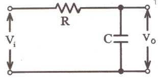
- 정현파
- 구형파
- 계단파
- 삼각파
(정답률: 63%)
17. 중앙처리장치(CPU)의 구성 요소에 해당하지 않는 것은?
- 연산장치
- 입력장치
- 제어장치
- 레지스터
(정답률: 65%)
18. 다음 중 고급언어로 작성된 프로그램을 한꺼번에 번역하여 목적프로그램을 생성하는 프로그램은?
- 어셈블리어
- 컴파일러
- 인터프리터
- 로더
(정답률: 73%)
19. 메모리로부터 읽어낸 데이터나 기억장치에 쓸 데이터를 임시 보관하는 레지스터는?
- 인덱스 레지스터
- 메모리 어드레스 레지스터
- 메모리 버퍼 레지스터
- 범용 레지스터
(정답률: 67%)
20. 2진수 (1010)2의 1의 보수는?
- 0101
- 1010
- 1011
- 1101
(정답률: 79%)
21. 아래 그림과 같이 두 개의 게이트를 상호 접속할 때 결과로 얻어지는 논리게이트는?
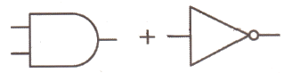
- OR
- NOT
- NAND
- NOR
(정답률: 81%)
22. 주소 지정방식 중 명령어의 피연산자 부분에 데이터의 값을 저장하는 주소지정 방식은?
- 즉시 주소지정 방식
- 절대 주소지정 방식
- 상대 주소지정 방식
- 간접 주소지정 방식
(정답률: 56%)
23. 자료전송에 발생하는 에러(error) 검출을 위하여 추가된 bit는?
- 3-초과
- gray
- parity
- error
(정답률: 75%)
24. 다음 중 선입선출(FIFO) 동작을 하는 것은?
- RAM
- ROM
- STACK
- QUEUE
(정답률: 66%)
25. 컴퓨터에서 2KB의 크기를 byte단위로 표현하면?
- 512 byte
- 1024 byte
- 2048 byte
- 4096 byte
(정답률: 82%)
26. 주기억장치(RAM)과 중앙처리장치(CPU)의 속도 차이를 해소하기 위한 기억장치의 명칭은?
- 가상 기억장치
- 캐시 기억장치
- 자기코어 기억장치
- 하드디스크 기억장치
(정답률: 81%)
27. 산술 및 논리 연산의 결과를 일시적으로 기억하는 레지스터는?
- 기억 레지스터(storage register)
- 누산기(accumulator)
- 인덱스 레지스터(index register)
- 명령 레지스터(instruction register)
(정답률: 78%)
28. 순서도 사용에 대한 설명 중 틀린 것은?
- 프로그램 코딩의 직접적인 기초 자료가 된다.
- 오류 발생 시 그 원인을 찾아 수정하기 쉽다.
- 프로그램의 내용과 일 처리 순서를 파악하기 쉽다.
- 프로그램 언어마다 다르게 표현되므로 공통적으로 사용할 수 없다.
(정답률: 80%)
29. 표준 신호 발생기(SSG)가 갖추어야 할 조건 중 옳지 않은 것은?
- 불필요한 출력을 내지 않을 것
- 발진 주파수가 정확하고, 파형이 양호할 것
- 출력이 가변 될 수 있고, 정확한 값을 알 수 있을 것
- 출력 임피던스가 작고, 가변적일 것
(정답률: 67%)
30. 1㏁ 이상의 고저항 또는 절연 저항의 측정에서 사용되는 방법으로 틀린 것은?
- 직편법
- 전압계법
- 충격 검류계법
- 헤비사이드 브리지법
(정답률: 52%)
3과목: 전자측정
31. 오실로스코프에서 다음과 같은 파형을 얻었다. 이것은 무엇을 측정한 파형인가? (단, A = 3, B = 1 이다.)
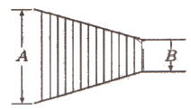
- 100% AM 변조파
- 100% FM 변조파
- 50% AM 변조파
- 50% FM 변조파
(정답률: 69%)
32. 정재파에 의하여 마이크로파의 임피던스를 측정하고자 한다. 싱크로스코프에 의한 정재파형이 그림과 같을 때 전압정재파비는 얼마인가?
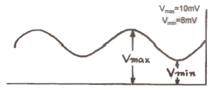
- 1.25
- 0.8
- 80
- 18
(정답률: 54%)
33. 고주파 전류를 측정하는데 사용하는 계기는?
- 계기용 변류기
- 열전형 전류계
- 직류 변류기
- 후크 미터
(정답률: 58%)
34. 고주파 전류측정에 적합한 계기는?
- 열전형
- 가동 코일형
- 정류형
- 가동 철편형
(정답률: 55%)
35. 전류 측정 시 참값이 100mA이고, 측정값이 102mA일 때 오차율은 몇 % 인가?
- -2
- 2
- -1.96
- 1.96
(정답률: 72%)
36. 다음은 검류계의 내부저항 측정 그림이다. 검류계의 내부 저항 Rg의 값을 구하는 계산식으로 옳은 것은?
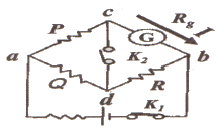
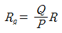
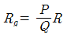
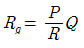
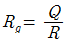
(정답률: 67%)
37. 아날로그 회로시험기와 비교한 디지털 멀티미터의 장점이 아닌 것은?
- 입력임피던스가 높아 피측정량이 미치는 영향이 적다.
- 측정결과를 읽을 때 개인오차가 없다.
- 대부분의 측정이 수동으로 수행된다.
- 측정 정밀도가 높다.
(정답률: 73%)
38. 기전력 100V, 내부저항 33Ω인 전지에 내부저항 300Ω인 전압계를 접속할 때, 전압계의 지시값은 약 몇 V 인가?
- 90
- 93
- 96
- 100
(정답률: 44%)
39. 테스트 패턴 발생기(test pattern generator)의 용도로 옳은 것은?
- 정현파 발생용
- 전자회로 도면 작성용
- 라디오의 주파수 복조용
- 텔레비전의 송수신의 조정용
(정답률: 56%)
40. 오실로스코프 측정 시 파형이 정지하지 않고 움직일 때 조정해야 하는 것은?
- 수평축 제어
- 포지션 제어
- 트리거 제어
- 수직축 제어
(정답률: 61%)
41. 녹음기 헤드 사용상의 주의사항으로서 틀린 것은?
- 헤드에 충격을 주지 말 것
- 헤드면을 때때로 알코올을 가제에 적셔 가볍게 닦는 것
- 자성체를 헤드에 접근시키지 말 것
- 헤드가 자화되면 강한 자석을 헤드에 접근시켜 소자(消磁)하는 것
(정답률: 74%)
42. 반도체에 전기장을 가하면 생기는 현상은?
- 열전 효과
- 전기 발광
- 광전 효과
- 홀 효과
(정답률: 51%)
43. 안테나 전략이 100W에서 400W로 증가하면 동일 지점의 전계 강도는 몇 배로 변하는가?
- 0.5
- 0.25
- 2
- 4
(정답률: 49%)
44. VTR의 재생 화면에 하나 또는 다수의 흰 수평선이 나타나는 드롭 아웃(Drop Out) 현상의 원인은?
- 수평 동기가 정확히 잡히지 않기 때문에
- 영상 신호에 강한 잡음 신호가 혼입되기 때문에
- 전원전압이 순간적으로 불안정하기 때문에
- 테이프와 헤드 사이에 먼지 등이 끼기 때문에
(정답률: 68%)
45. 태양 전지에 축전 장치가 필요한 이유는?
- 연속적인 사용을 위해서
- 빛의 반사를 위해서
- 빛의 굴절을 위해서
- 위의 3가지 모두를 위해서
(정답률: 75%)
4과목: 전자기기 및 음향영상기기
46. 음압의 단위를 올바르게 표현한 것은?
- N/C
- µbar
- Hz
- Neper
(정답률: 75%)
47. AN(Arriaval Notice) 레인지 비컨(range beacon)에서 등신호 방향과 관계가 없는 것은?
- 45°
- 135°
- 190°
- 315°
(정답률: 69%)
48. 전자현미경에 초점은 무엇으로 조정하는가?
- 투사렌즈의 여자전류
- 대물렌즈의 여자전류
- 집광렌즈의 여자전류
- 드림렌즈의 여자전류
(정답률: 72%)
49. 오디오 시스템(Audio System)에서 잡음에 대하여 가장 영향을 많이 받은 부분은?
- 등화 증폭기
- 저주파 증폭기
- 전력 증폭기
- 주출력 증폭기
(정답률: 55%)
50. 라디오 수신기의 중간 주파수가 455kHz 이고, 상측 헤테로다인 방식이라면 700kHz 방송을 수신할 때 국부발진 주파수는 몇 kHz 인가?
- 455
- 700
- 1155
- 1600
(정답률: 75%)
51. TV수상기 고스트(ghost)의 경감 대책에 관계가 없는 것은?
- 안테나 높이를 바꾼다.
- 지향성이 예민한 안테나를 사용한다.
- 안테나와 급전선 거리를 멀리 떼어야 한다.
- 동축케이블을 사용한다.
(정답률: 55%)
52. CD 플레이어의 구조에서 광학부의 역할은?
- 모터를 구동하는 부분
- 디스크의 정해진 위치에 레이저를 비추어 그 반사광을 픽업하는 부분
- 수록된 음악 소스의 연주 시간과 재생되는 부분을 나타내는 표시하는 부분
- D/A 컨버터 및 리샘플링 회로에 의해 좌우로 분리된 아날로그 신호를 LPF를 통해서 증폭되어 아날로그 스테이지를 거쳐 프리앰프로 출력하는 부분
(정답률: 62%)
53. 2헤드 방식의 VTR에서 한 장의 재생화면(1 frame)을 완성하려면 헤드 드림은 몇 회전을 하여야 하는가?
- 0.5
- 1
- 30
- 60
(정답률: 52%)
54. 스트레이트 수신기가 슈퍼헤테로다인 수신기에 비해 다른 특징이 아닌 것은?
- 조정이 복잡하다.
- 감도가 나쁘다.
- 인접 주파수 선택도가 나쁘다.
- 구성이 간단하다.
(정답률: 43%)
55. 다음 중 압력을 변위로 변환할 수 있는 것은?
- 스프링
- 전자석
- 전자코일
- 유도형 변환기
(정답률: 71%)
56. 주파수가 1 MHz 인 전자기파의 파장은 몇 m 인가? (단, v=3×108 이다.)
- 30
- 100
- 300
- 450
(정답률: 69%)
57. 초음파의 감쇠율에 관한 설명으로 틀린 것은?
- 감쇠율은 물질에 따라 다르다.
- 초음파의 진동수가 클수록 감쇠율이 크다.
- 초음파의 세기는 진폭의 제곱에 비례한다.
- 고체가 가장 크고, 액체 , 기체의 순서로 작아진다.
(정답률: 63%)
58. 셀렌에 빛을 쬐면 기전력이 발생하는 원리를 이용하여 만든 계기는?
- 조도계
- 체온계
- 압축계
- 풍속계
(정답률: 75%)
59. 프로세스 제어(process control)는 어느 제어에 속하는가?
- 추치 제어
- 속도 제어
- 정치 제어
- 프로그램 제어
(정답률: 57%)
60. FM 검파 회로에서 비검파(ratio) 회로가 사용되는 주된 이유는?
- 동조가 간단하므로
- 검파 출력 전압이 크므로
- 출력 임피던스가 낮으므로
- 진폭제한 작용을 하므로
(정답률: 42%)